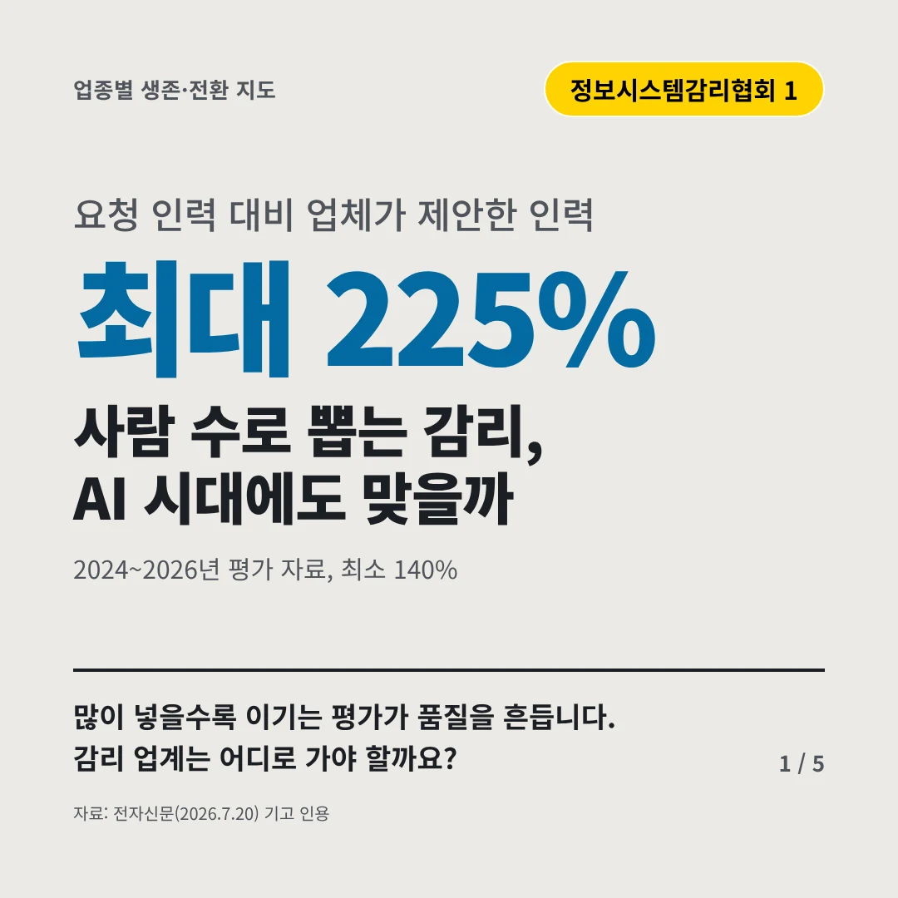
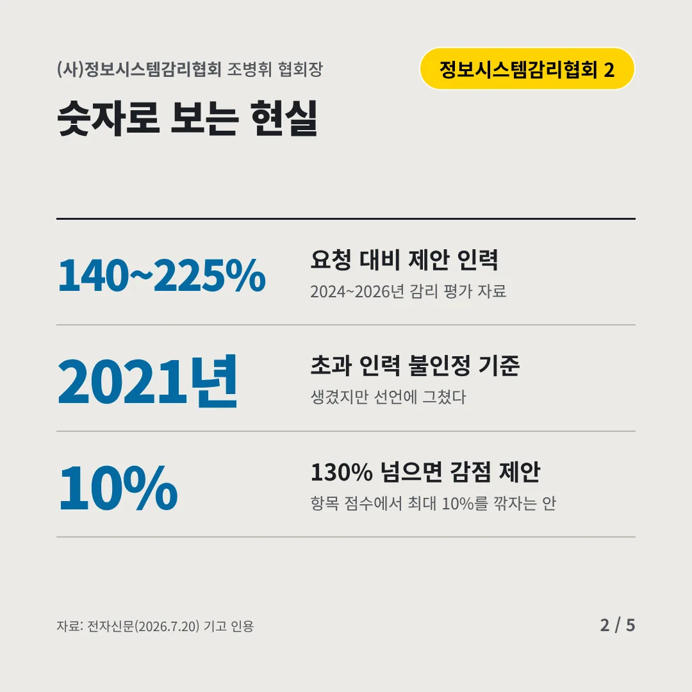
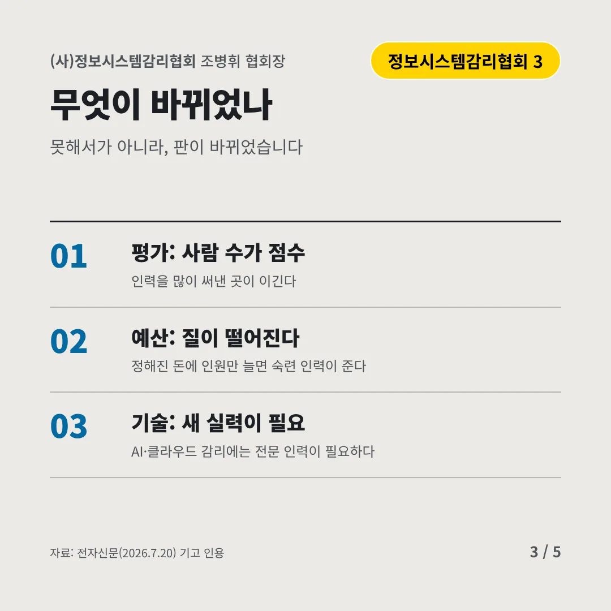
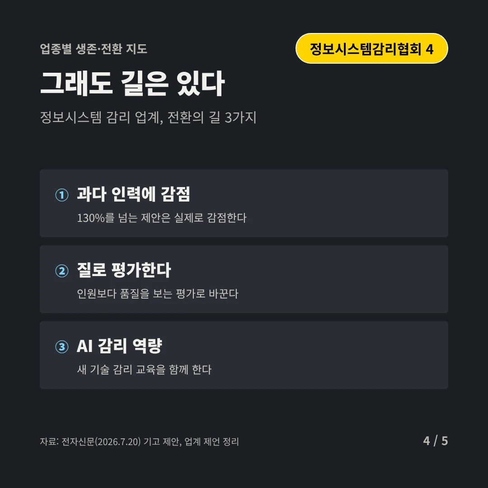
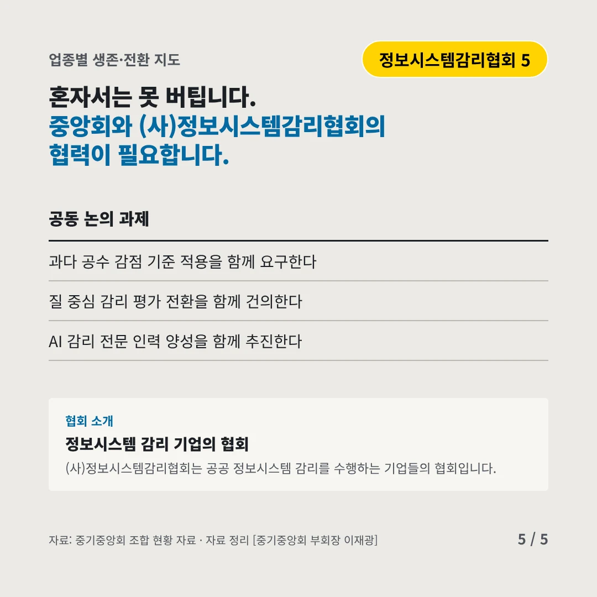
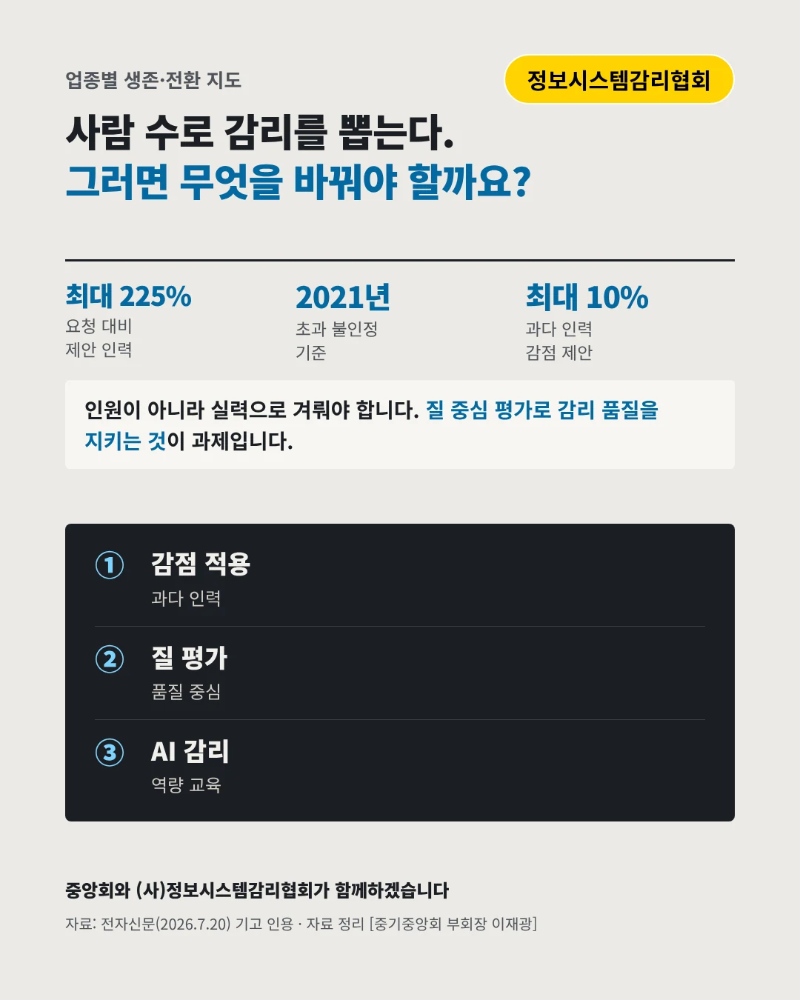

(사)정보시스템감리협회
사람 수로 뽑는 감리, AI 시대에도 맞을까
최대 225% 요청 인력 대비 업체가 제안한 인력






많이 넣을수록 이기는 평가가 품질을 흔듭니다. 감리 업계는 어디로 가야 할까요?
숫자로 보는 현실
- 140~225%요청 대비 제안 인력2024~2026년 감리 평가 자료
- 2021년초과 인력 불인정 기준생겼지만 선언에 그쳤다
- 10%130% 넘으면 감점 제안항목 점수에서 최대 10%를 깎자는 안
무엇이 바뀌었나
- 평가: 사람 수가 점수인력을 많이 써낸 곳이 이긴다
- 예산: 질이 떨어진다정해진 돈에 인원만 늘면 숙련 인력이 준다
- 기술: 새 실력이 필요AI·클라우드 감리에는 전문 인력이 필요하다
그래도 길은 있다
- 과다 인력에 감점130%를 넘는 제안은 실제로 감점한다
- 질로 평가한다인원보다 품질을 보는 평가로 바꾼다
- AI 감리 역량새 기술 감리 교육을 함께 한다
한 장 요약

협회 소개
(사)정보시스템감리협회는 공공 정보시스템 감리를 수행하는 기업들의 협회입니다.
자료: 전자신문(2026.7.20)